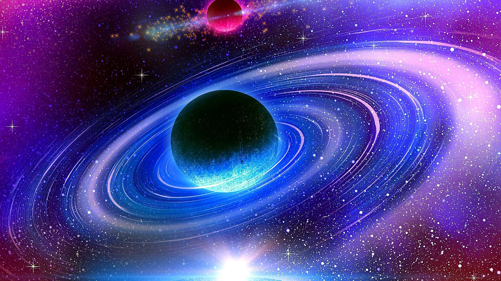
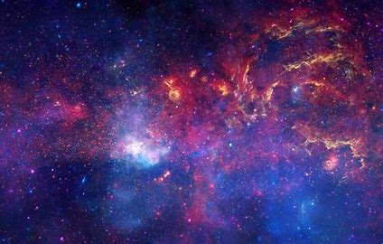
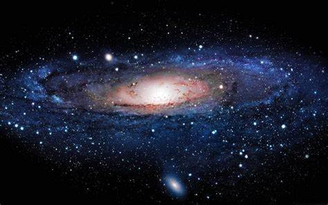
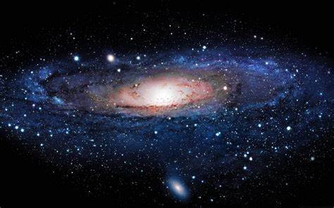

GALAXI
galaxi bimasakti
Galaksi (serapan dari bahasa Yunani γαλαξίας, artinya "semacam susu", merujuk kepada Bimasakti) adalah sebuah sistem masif yang terikat gaya gravitasi yang terdiri atas bintang (dengan segala bentuk manifestasinya, antara lain bintang neutron dan lubang hitam), gas dan debu medium antarbintang, dan materi gelap–komponen yang penting namun belum begitu dimengerti
JENIS DAN BENTUK GALAXI
Jenis dan bentuk Artikel utama: Klasifikasi bentuk galaksi Jenis-jenis galaksi berdasarkan sistem klasifikasi Hubble. E merupakan tipe galaksi eliptis, S merupakan galaksi spiral, dan SB merupakan galaksi spiral berbatang.[note 1] Galaksi dapat dikelompokkan dalam tiga jenis utama: eliptis, spiral dan tak beraturan. Gambaran yang lebih lengkap mengenai jenis galaksi berdasarkan bentuknya bisa didapatkan dalam sistem klasifikasi Hubble. Karena sistem klasifikasi Hubble hanya berdasarkan pada pengamatan visual, klasifikasi ini mungkin melewatkan beberapa karakteristik penting dari galaksi, seperti laju pembentukan bintang (di galaksi starburst) dan aktivitas inti galaksi (di galaksi aktif).[7] Eliptis Artikel utama: Galaksi eliptis Galaksi-galaksi terbesar di alam semesta berbentuk galaksi eliptis raksasa. Kebanyakan galaksi eliptis dipercayai terbentuk akibat interaksi antar galaksi yang menyebabkan tabrakan atau penggabungan.[49] Galaksi starburst merupakan akibat dari tabrakan yang demikian dan dapat menyebabkan pembentukan galaksi eliptis.
Spiral Artikel utama: Galaksi spiral dan Galaksi spiral berbatang Galaksi Pusaran (kiri), sebuah galaksi spiral tanpa batang. Galaksi spiral terdiri dari sebuah piringan bintang-bintang yang berotasi, materi antarbintang, serta sebuah tonjolan pusat yang terdiri dari bintang-bintang tua. Selain itu, terdapat lengan-lengan spiral terang yang menjulur dari tonjolan pusat. Dalam sistem klasifikasi Hubble, galaksi spiral digolongkan sebagai tipe S, diikuti sebuah huruf (a, b, atau c) yang menunjukkan tingkat kerapatan dari lengan spiral dan ukuran dari tonjolan pusat. Galaksi Sa memiliki lengan spiral yang samar dan bergulung rapat, serta tonjolan pusat yang relatif besar. Sedangkan galaksi Sc memiliki lengan spiral yang jelas dan melebar serta tonjolan pusat yang relatif kecil.[50] Galaksi spiral dengan lengan yang tidak jelas terkadang disebut galaksi spiral flocculent. Sedang galaksi dengan lengan yang jelas dan menonjol disebut galaksi spiral grand design. Dalam galaksi spiral, lengannya membentuk pola seperti spiral logaritmis, pola yang secara teoretis terbentuk karena adanya gangguan terhadap massa bintang yang berputar seragam. Dalam teori gelombang kepadatan lengan spiral ini diperkirakan berisi materi berkepadatan tinggi.[51] Saat bintang melewati salah satu lengan galaksi kecepatannya dipengaruhi oleh gaya gravitasi daerah yang kepadatan materinya lebih tinggi, dan kembali normal saat bintang sudah melewatinya. Efek ini mirip dengan "gelombang" pelambatan mobil di jalan raya yang penuh mobil. Lengan galaksi terlihat jelas karena kepadatan materi yang tinggi memungkinkan pembentukan bintang sehingga terdapat banyak bintang muda dan terang di sana.[52]
TENTANG GALAXI
tentang galaxi bimasakti
Artikel utama: Galaksi yang berinteraksi Jarak antar galaksi jika dibandingkan dengan ukurannya, tidaklah terlalu besar. Jarak rata-rata antar galaksi dalam sebuah gugus hanyalah beberapa puluh kali diameternya; bandingkan dengan jarak antar bintang dalam galaksi yang bisa mencapai ratusan ribu hingga jutaan kali ukurannya.[66] Karena itu interaksi antar galaksi cukup sering terjadi dan memainkan peranan penting dalam evolusinya. Galaksi-galaksi yang berpapasan namun tidak benar-benar bersinggungan, akan menyebabkan terganggunya bentuk galaksi yang terlibat akibat tarik menarik gravitasinya, dan dapat menyebabkan pertukaran gas dan debu.[67][68]
Interaksi antar galaksi yang paling ekstrem adalah penggabungan galaksi. Dalam kasus ini, momentum relatif kedua galaksi tidak cukup untuk kedua galaksi dapat saling menembus. Yang terjadi malah, kedua galaksi tersebut perlahan bergabung membentuk galaksi tunggal yang lebih besar. Penggabungan dapat menyebabkan perubahan luar biasa terhadap bentuk galaksi jika dibandingkan dengan bentuk kedua galaksi asal. Namun, jika salah satu galaksi jauh lebih besar dari yang lainnya, penggabungan demikian disebut kanibalisme. Dalam kasus ini, galaksi yang lebih besar akan tetap relatif tak terganggu akibat penggabungan tersebut, sementara galaksi yang lebih kecil tercabik-cabik. Galaksi Bima Sakti saat ini sedang dalam proses penganibalan Galaksi Eliptis Katai Sagitarius dan Galaksi Katai Canis Major.[67][68]
DINAMIKA GALAXI
Bentuk Bima Sakti yang disimpulkan dari hitungan bintang oleh William Herscel pada tahun 1785; tata surya dianggap berada di dekat pusat galaksi.
Menurut Mohani Muhammad, astronom Arab Ibnu Haitham (965–1037) adalah orang yang melakukan usaha-usaha pertama dalam mengamati dan mengukur paralaks Bima Sakti,[19] dan ia menjadi "berkeyakinan kuat bahwa karena Bima Sakti tidak memiliki paralaks, pastilah jaraknya sangat jauh dari bumi dan bukannya berada dalam atmosfer."[20] Astronom Persia Al-Biruni (973–1048) mengemukakan bahwa Bima Sakti merupakan "kumpulan yang tak terhitung jumlahnya dari bagian-bagian yang bersifat seperti bintang nebula.
PEMBENTUKAN GALAXI
Model kosmologi yang ada saat ini mengenai alam semesta awal didasarkan pada teori Dentuman Besar. Sekitar 300.000 tahun setelah peristiwa Dentuman Besar, atom-atom hidrogen dan helium mulai terbentuk, dalam sebuah peristiwa yang disebut rekombinasi.
Bukti tentang kemunculan awal galaksi ditemukan pada tahun 2006, ketika diketahui bahwa galaksi IOK-1 memiliki geseran merah yang luar biasa tinggi sebesar 6,96, setara dengan jangka waktu hanya 750 juta tahun setelah Dentuman Besar. Hal ini menjadikannya sebagai galaksi terjauh dan paling purba yang pernah dilihat.[80] Meskipun beberapa ilmuwan mengklaim objek lainlah (misalnya galaksi Abell 1835 IR1916) yang memiliki geseran merah lebih tinggi (dan karena itu sudah ada pada tahap yang lebih awal dalam evolusi alam semesta), namun usia dan komposisi IOK-1 ditentukan dengan cara yang lebih dapat diandalkan. Adanya protogalaksi yang seawal itu kemunculannya menunjukkan bahwa protogalaksi tersebut pastilah berkembang dalam apa yang disebut "Zaman Kegelapan".[78] Namun, pada bulan Desember 2012 para astronom melaporkan bahwa galaksi UDFj-39546284 adalah galaksi terjauh yang diketahui dengan nilai geseran merah 11,9. Galaksi tersebut diperkirakan sudah ada sejak sekitar "380 juta tahun"[81] setelah Dentuman Besar (setara dengan sekitar 13,8 miliar tahun yang lalu),[82] dan berjarak kira-kira 13,42 miliar tahun cahaya.

Galaksi Bima Sakti merupakan galaksi spiral berbatang ukuran besar[56] dengan diameter sekitar 30 kiloparsec dan ketebalan sekitar satu kiloparsec. Bima Sakti memiliki sekitar 200 miliar (2×1011)[57] bintang dengan massa total sekitar 600 miliar (6×1011) kali massa Matahari.[58]Sebagian besar galaksi spiral memiliki kumpulan bintang berbentuk batang lurus yang memanjang keluar dari sisi daerah inti dan kemudian bergabung dengan struktur lengan spiral.[53] Dalam sistem klasifikasi Hubble, galaksi ini dikategorikan sebagai SB, dan diikuti huruf (a, b atau c) yang mengindikasikan bentuk lengan spiralnya (serupa dengan penggolongan galaksi spiral biasa). Batang galaksi diperkirakan merupakan struktur sementara yang disebabkan oleh gelombang materi berkepadatan tinggi dari inti galaksi, atau karena interaksi pasang surut dengan galaksi lain.[54] Banyak galaksi spiral berbatang yang berinti aktif, kemungkinan karena adanya gas yang menuju ke inti melalui lengan spiral.[55]
Popular Post
 

Selain yang disebutkan dalam klasifikasi di atas, terdapat beberapa galaksi yang tidak dapat langsung digolongkan ke dalam bentuk eliptis atau spiral. Kelompok ini digolongkan sebagai galaksi tak beraturan. Galaksi tak beraturan tipe Irr-I memiliki semacam struktur, namun tidak jelas masuk dalam salah satu klasifikasi Hubble. Galaksi tak beraturan tipe Irr-II tidak memiliki struktur apapun yang mirip klasifikasi Hubble, dan kemungkinan pernah terganggu oleh galaksi lain.[62] Contoh terdekat galaksi (katai) iregular adalah Awan Magellan. Katai Artikel utama: Galaksi katai Meski galaksi eliptis dan spiral terlihat sangat menonjol, namun sepertinya sebagian besar galaksi di alam semesta merupakan galaksi katai. Galaksi katai tampak relatif kecil jika dibandingkan dengan galaksi lain, kira-kira hanya seperseratus dari ukuran Bima Sakti dan hanya berisi beberapa miliar bintang. Bahkan beberapa galaksi katai ultra-kompak baru-baru ini ditemukan yang hanya berukuran 100 parsec panjangnya.[63] Beberapa galaksi katai dapat mengitari sebuah galaksi tunggal yang lebih besar; Bima Sakti sendiri memiliki sedikitnya selusin satelit yang demikian, dengan perkiran 300–500 lagi belum ditemukan.[64] Galaksi katai dapat juga diklasifikasikan lagi menjadi eliptis, spiral, atau tak beraturan. Karena galaksi katai eliptis kecil hanya memiliki sedikit kemiripan dengan galaksi eliptis besar, maka mereka lebih sering disebut galaksi sferoid katai. Sebuah penelitian terhadap 27 galaksi tetangga Bima Sakti, menemukan bahwa setiap galaksi katai memiliki massa pusat kurang lebih 10 juta massa matahari terlepas dari apakah galaksi tersebut memiliki seribu atau sejuta bintang. Hal ini mendorong pada kesimpulan bahwa galaksi sebagian besarnya terdiri dari materi gelap, dan bahwa ukuran minimumnya mungkin menunjukkan keberadaan semacam materi gelap hangat, yang tak mampu melakukan peleburan gravitasi dalam skala kecil